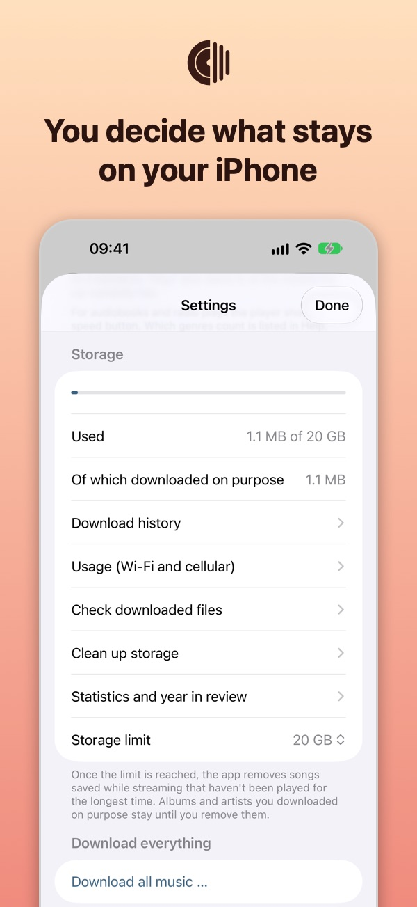
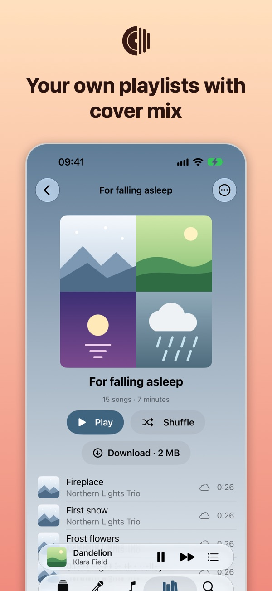
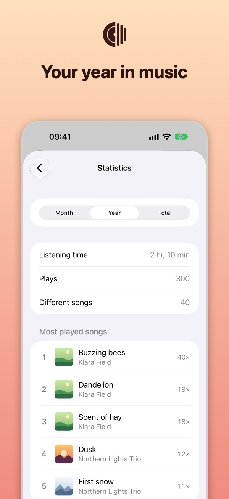
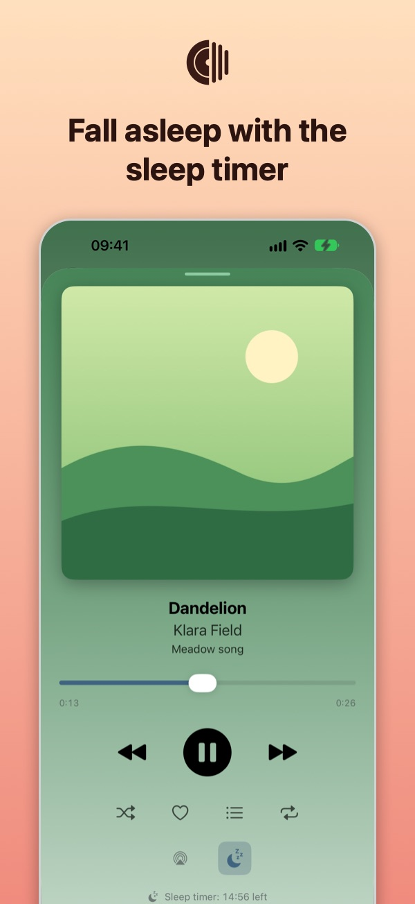
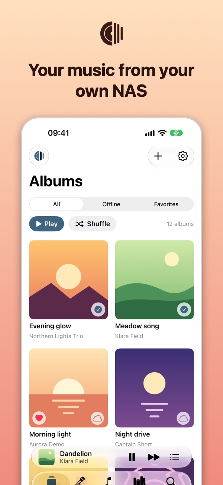
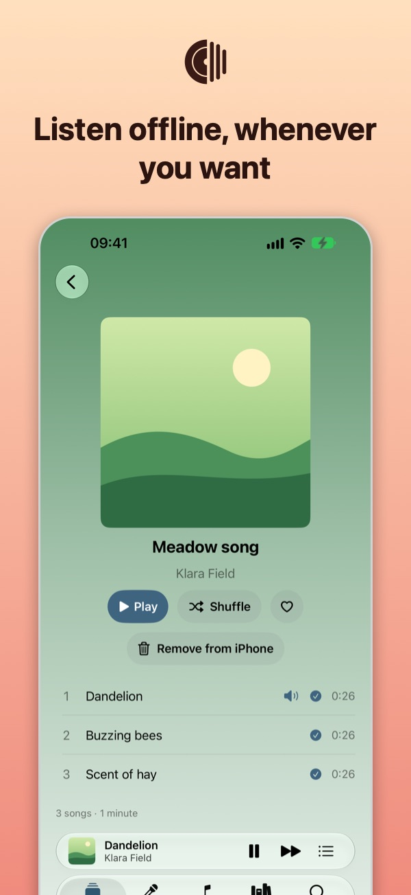
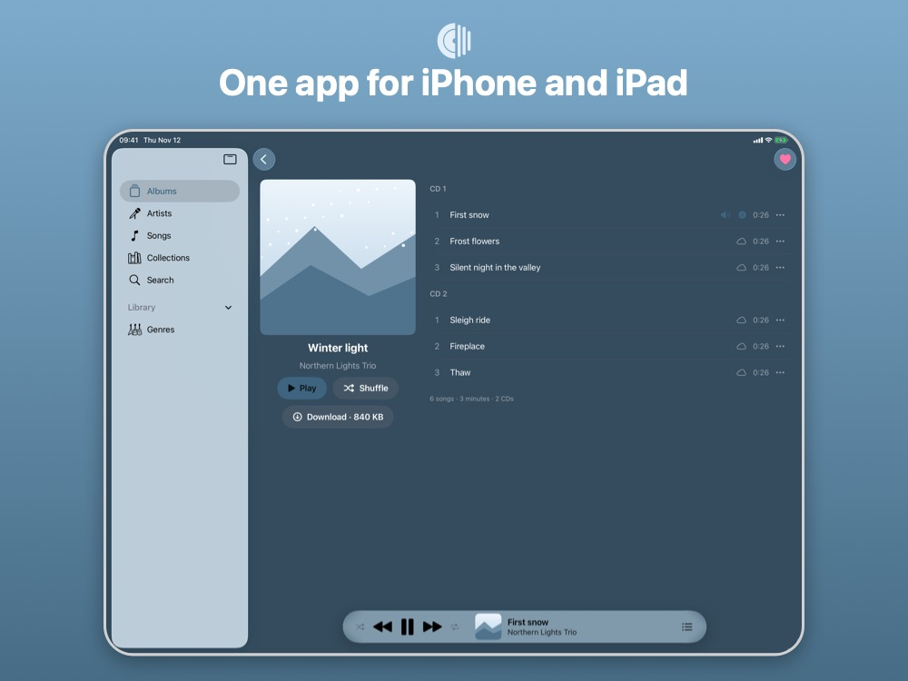
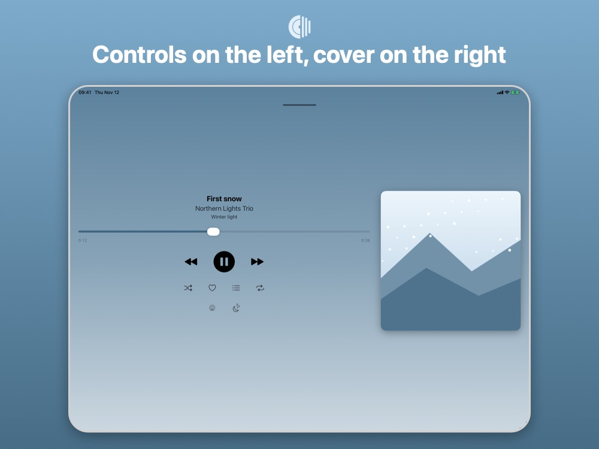
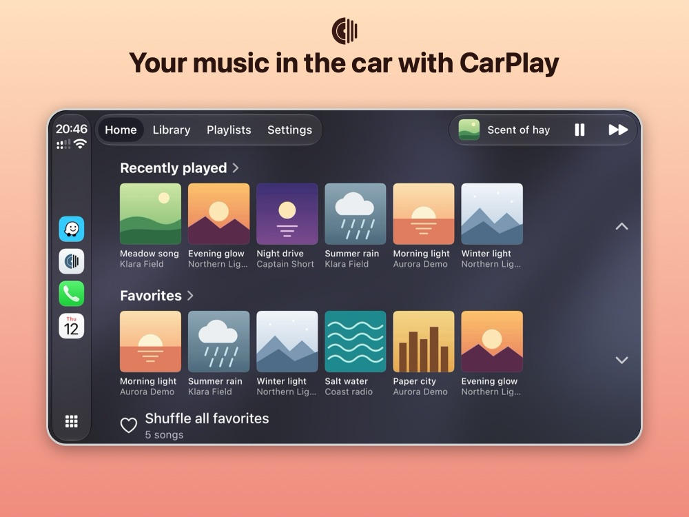

IPHONE
Your whole library in your pocket
Album overview, offline downloads, storage, playlists, statistics, and sleep timer on iPhone.




Plays the music on your Synology NAS (Audio Station) on iPhone and iPad: stream, listen offline, CarPlay and Siri. Free, no ads, no tracking.
 Free · no in-app purchases
Free · no in-app purchases


On iPhone, on iPad and in the car: the same library, the same favorites, the same music.
Album overview, offline downloads, storage, playlists, statistics, and sleep timer on iPhone.




One app for iPhone and iPad: sidebar, two-column album page, and a player with controls on the left and cover on the right.


Pick from Home, Library, playlists, and genres right in the car.

On your home network the app finds your NAS itself. On the road, use an https address.
Download albums and artists to your device on purpose. Downloads keep running in the background.
At home, on the go, or without a network: downloaded music plays anywhere, the rest streams from your NAS. In the car you choose with CarPlay right on the display.
A Synology NAS with Audio Station that can be reached at an https address with a valid certificate. Without a NAS you can try the app in demo mode.